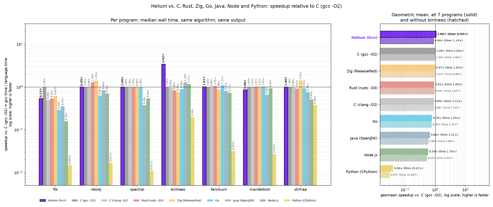

DESCRIBE WHAT A PROGRAM DOES IN PLAIN ENGLISH. GET CHECKED, NATIVE HELIUM.
Gold is plain English that compiles to Helium, our compiled language. You describe what a program or a product feature does, one short block at a time. Gold finds the functions your product already has, has an AI model write the Helium, checks it with the Helium compiler (types, memory safety, and the exact output when you give one), fixes compile errors on its own, and saves the result so the same Gold always builds the same program.
51% fewer
tokens for an AI to read than the original code, across six real apps
3,265 / 3,265
test inputs give the same answer as the original
1–2
model calls for a typical build; unchanged blocks are reused from the lock file
Write a .gold file: a few header lines, then one block of plain English per function or type. Run gold build. Below is a real file from our Amni-CAD rewrite, the JavaScript it replaced, and the Helium Gold wrote from it. All 1,298 test inputs give the same text as the original.
into units.amni
use os, math
dialect js
`SYS` = "us", or "si" if file `amnicad.sys` holds "si" (trimmed). `sys()` -> SYS. `set_sys(s)`: SYS = s=="si" ? "si" : "us", then try writing SYS to that file.
`MM_PER`: in 25.4, mm 1. `doc_units(u)`: u=="in" ? "in" : "mm". `mm_per(u)` = MM_PER[doc_units(u)].
`nf(v real, d int = -1)` -> new string: "—" if not finite, else JS `(+v.toFixed(d)||0).toLocaleString('en-US',{maximumFractionDigits:d})`; d=-1 means by |v|: ≥1000 0, ≥100 1, ≥10 2, ≥1 3, ≥0.01 4, else 5.
Struct `Unit { label const byte[:], factor real, offset real }`. `unit_entry(q, s)` -> Unit, aborts "unknown quantity" for unknown q. Per q: si label factor; us label factor [offset]:
- len: mm 1; in 1/25.4
- area: mm² 1; in² 1/645.16
- vol: cm³ 1e-3; in³ 1/16387.064
- mass: kg 1; lb 2.2046226
- force: N 1; lbf 0.22480894
- press, stress: MPa 1; psi 145.03774
- modulus: GPa 1e-3; Msi 1.4503774e-4
- torque: N·mm 1; lbf·in 0.0088507458
- temp: °C 1; °F 1.8 offset 32
- dtemp: K 1; °F 1.8
- power: W 1; BTU/hr 3.4121416
- film: W/m²K 1; BTU/hr·ft²·°F 0.17611016
- cond: W/m·K 1; BTU/hr·ft·°F 0.57782155
- speed: m/s 1; mph 2.2369363
- dens: kg/m³ 1; lb/in³ 3.6127292e-5
- accel: m/s² 1; ft/s² 3.2808399
- freq: Hz 1; Hz 1
- pa: Pa 1; psf 0.020885434
With u = unit_entry(q, s): `conv(q, v, s)` = v*u.factor + u.offset; `back(q, v, s)` = (v - u.offset)/u.factor; `unit_of(q, s = SYS)` = u.label; `to_si(q, v)` = back(q, v, SYS); `from_si(q, v)` = conv(q, v, SYS).
`one(q, v, s = SYS, d = -1)` -> new string: nf(conv(q, v, s), d) + " " + unit_of(q, s). `dual(q, v, d = -1)`: one(q, v, SYS, d) + " (" + one(q, v, other system, d) + ")".export const MM_PER={in:25.4,mm:1};
let SYS='us';try{SYS=localStorage.getItem('amnicad.sys')||'us';}catch{}
export const sys=()=>SYS;
export function setSys(s){SYS=s==='si'?'si':'us';try{localStorage.setItem('amnicad.sys',SYS);}catch{}}
export const docUnits=doc=>doc&&doc.units==='in'?'in':'mm';
export const mmPer=doc=>MM_PER[docUnits(doc)];
export function nf(v,d){if(v==null||!isFinite(v))return'—';const a=Math.abs(v),dd=d??(a>=1000?0:a>=100?1:a>=10?2:a>=1?3:a>=0.01?4:5);return((+v.toFixed(dd))||0).toLocaleString('en-US',{maximumFractionDigits:dd});}
export const Q={
len:{si:['mm',1],us:['in',1/25.4]},
area:{si:['mm²',1],us:['in²',1/645.16]},
vol:{si:['cm³',1e-3],us:['in³',1/16387.064]},
mass:{si:['kg',1],us:['lb',2.2046226]},
force:{si:['N',1],us:['lbf',0.22480894]},
press:{si:['MPa',1],us:['psi',145.03774]},
stress:{si:['MPa',1],us:['psi',145.03774]},
modulus:{si:['GPa',1e-3],us:['Msi',1.4503774e-4]},
torque:{si:['N·mm',1],us:['lbf·in',0.0088507458]},
temp:{si:['°C',1,0],us:['°F',1.8,32]},
dtemp:{si:['K',1],us:['°F',1.8]},
power:{si:['W',1],us:['BTU/hr',3.4121416]},
film:{si:['W/m²K',1],us:['BTU/hr·ft²·°F',0.17611016]},
cond:{si:['W/m·K',1],us:['BTU/hr·ft·°F',0.57782155]},
speed:{si:['m/s',1],us:['mph',2.2369363]},
dens:{si:['kg/m³',1],us:['lb/in³',3.6127292e-5]},
accel:{si:['m/s²',1],us:['ft/s²',3.2808399]},
freq:{si:['Hz',1],us:['Hz',1]},
pa:{si:['Pa',1],us:['psf',0.020885434]}};
export function conv(q,v,to){const u=Q[q][to];return v*u[1]+(u[2]||0);}
export function back(q,v,from){const u=Q[q][from];return(v-(u[2]||0))/u[1];}
export const unitOf=(q,s=SYS)=>Q[q][s][0];
export const toSI=(q,v)=>back(q,v,SYS);
export const fromSI=(q,v)=>conv(q,v,SYS);
export function one(q,vSI,s=SYS,d){return nf(conv(q,vSI,s),d)+' '+Q[q][s][0];}
export function dual(q,vSI,d){const a=SYS,b=a==='us'?'si':'us';return one(q,vSI,a,d)+' ('+one(q,vSI,b,d)+')';}import os;
import math;
var SYS byte[>..];
var SYS_INIT bool = false;
fn init_sys() {
if SYS_INIT { return; }
SYS_INIT = true;
var b byte[>..] = [];
var si = false;
if read_file("amnicad.sys", b) {
if trim(b) == "si" { si = true; }
}
SYS.clear();
SYS.append(if si { "si" } else { "us" });
}
fn sys() const byte[:] {
init_sys();
SYS[0..SYS.len]
}
fn set_sys(s const byte[:]) {
SYS_INIT = true;
let si = s == "si";
SYS.clear();
SYS.append(if si { "si" } else { "us" });
let ok = write_file("amnicad.sys", SYS[0..SYS.len]);
}
fn doc_units(u const byte[:]) const byte[:] {
if u == "in" { "in" } else { "mm" }
}
fn mm_per(u const byte[:]) real {
if doc_units(u) == "in" { 25.4 } else { 1.0 }
}
fn nf(v real, d int = -1) byte[>..] {
var out byte[>..] = [];
if !is_finite(v) {
out.append("—");
return out;
}
var dd = d;
if dd < 0 {
let a = abs(v);
dd = if a >= 1000.0 { 0 } else if a >= 100.0 { 1 } else if a >= 10.0 { 2 } else if a >= 1.0 { 3 } else if a >= 0.01 { 4 } else { 5 };
}
var t byte[>..] = [];
format_flt(t, v, dd, true);IN THE TERMINAL
$ gold build units.gold
gold: translating 6 of 6 blocks with sonnet
gold: repairing 1 block(s), round 1
gold: units.amni ok (6 blocks, 294 Gold words -> 846 Helium words; 2 model calls, $0.19, 36 s)
$ gold run units.gold
$ gold test units.gold
| Step | What you do |
|---|---|
| 1. Header | use the product (or Helium library modules) whose functions the code should call, into the file to write, and optionally dialect js (or rust, python, java, kotlin, numpy) when you port code, so that language's number and rounding rules apply everywhere without being spelled out. |
| 2. Blocks | One block per unit, separated by blank lines. Say what it does: inputs, result, rules, formats, edge cases. Put exact names in backticks only when other code calls them. |
| 3. Build | gold build f.gold writes checked Helium. Edit one block and rebuild: only that block goes back to the model. |
| 4. Check | gold run, gold test, or an expect: list of exact output lines that Gold runs and repairs against. |
| 5. Port | gold port app.rs into=src/app.he reads existing code in any language and writes the Gold for it, then builds it. |
| 6. Shrink | gold compact packs data tables; gold squeeze f.gold check='<cmd>' shortens the Gold and keeps the shorter version only if a fresh rebuild still passes your check. |
| Command | What it does |
|---|---|
gold build f.gold | Translate the blocks (cached in f.gold.lock), check with the Helium compiler, write the Helium next to the Gold file or into a product. |
gold run f.gold [-- args] | Build, then run the program. |
gold show f.gold | Build, then print the Helium. |
gold test f.gold | Build, then run the test commands of every pack it uses. |
gold port src [use=] [into=] [lang=] [ns=] [gold=] | Write Gold for existing code in any language, then build it. |
gold pack name dir [lang=] [main=] [test=] [skip=] | Index a product's Helium functions, types and globals into packs/name so Gold can find and call them. |
gold packs | List the packs. |
gold find pack,pack words | Show which functions a sentence would retrieve. |
gold compact f.gold | Pack data tables: a first @ row of column scales, blank cells repeat the cell above. No model call. |
gold squeeze f.gold check='cmd' [rounds=4] | Shorten the Gold as far as it goes; each shorter version is rebuilt from scratch and kept only if the check command passes. |
| Part | Meaning |
|---|---|
use a, b | Packs or Helium library modules whose functions the code may call. |
into path | The file to write, inside the product or absolute. |
lang amni|he|py | The Helium flavor to write (default: the into file's, else the product's). |
dialect js|rust|python|java|kotlin|numpy | The source language's conventions apply to every block. |
| Blocks | Plain English separated by blank lines, one unit each. Backticks mark exact names and signatures. |
```amni / ```he fence | Literal Helium, kept as written. |
```table fn Type fence | Data rows, | between cells in field order; " or a blank cell repeats the cell above; '' is an empty string. Becomes a fn() returning the rows, without a model call. |
expect: | The exact lines a program must print; Gold runs it and repairs until they match. |
# ... | A comment line. |
| Variable | Default | Meaning |
|---|---|---|
GOLD_MODEL | sonnet | Model that writes the Helium. |
GOLD_MODEL_HARD | opus | Model for the last repair round. |
GOLD_MODEL_PORT | opus | Model that writes Gold from existing code. |
GOLD_TRIES | 4 | Repair rounds, extended up to 10 while each round changes the errors. |
GOLD_K | 70 | Product functions shown to the model per build. |
GOLD_HELIUM, GOLD_HC, GOLD_HC_LIB | helium checkout | Which Helium compiler and library to check against. |
GOLD_CACHE, GOLD_VERBOSE | ~/.cache/gold | Cache folder; print each step. |
| Function | What it does |
|---|---|
gf::dot64(out, at, vecs, vat, s, sat, rot = 0) | One 64-byte row of a GF(28) matrix product: 16 table rows times 4-byte groups of s, optionally rotated. Uses the CPU's GFNI vector instructions when it has them. |
gf::mix(buf, at, n), gf::mix_inv(buf, at, n) | The AES S-box and MixColumns step (and its inverse) on every 4-byte group, with the CPU's AES instructions when available. |
gf::mul(a, b) | Multiply two bytes in the AES field. |
hex_encode(out, b), hex_decode(s, out) | Lowercase hex out, either case in, 8 digits per step; decode returns false on bad input. |

Seven benchmarks, geomean speed vs C (gcc -O2), higher is faster: Helium 1.06×, Zig 0.97×, Rust 0.92×, C (clang) 0.89×, Go 0.78×, Java 0.66×, Node.js 0.59×, Python 0.04×.
| Measure | Original | Helium | Result |
|---|---|---|---|
| WAYSTONE: FULL PORT, AT FEATURE PARITY WITH THE JAVASCRIPT ORIGINAL | |||
| World build + 4,000 queries | 1,593–2,577 ms (Node) | 627–1,302 ms | 1.9–2.5× faster |
| Peak memory | 86.7–113.1 MiB | 6.1–8.0 MiB | ~14× less |
| Start-up | 20.8 ms | 1.4 ms | 15× faster |
| Source code | 435,133 bytes | 377,657 bytes | 13% smaller |
| World test, to run | 127 MB Node runtime + source | 2.36 MB static binary | one file |
| POM-POM GROVE: RUST TO HELIUM | |||
| Garden sim binary | 1,854,736 bytes | 1,093,632 bytes | 41% smaller |
| Peak memory | 3.9 MiB | 1.6 MiB | 2.4× less |
| Hand-written code | 218,534 bytes | 180,959 bytes | 17% smaller |
Benchmarks: medians, identical output, Xeon, Debian 13, Oct 2026.
We took the core engine of six Amni apps, had Gold write each one as plain English, and built that into Helium. Every rewrite was run on hundreds of real inputs next to the original and gives the same answers.
3,265 / 3,265
test inputs give the same answer as the original
51% fewer
tokens for an AI to read than the original code (58,256 vs 118,343)
5 of 6
rewrites run faster than the original
| App (part rewritten) | Original | Same answers | Tokens: original → Gold | Speed vs original |
|---|---|---|---|---|
| Amni-Calc (all engineering calculators) | Rust | 687 / 687 | 95,993 → 45,948 (52% fewer) | 1.10× slower |
| Amni-Price (shelf-tag price reader) | Kotlin | 400 / 400 | 5,376 → 3,576 (33% fewer) | 1.2× faster |
| Amni-Type (swipe-typing decoder) | Java | 400 / 400 | 3,618 → 1,974 (45% fewer) | 1.4× faster |
| Amni-Mail (mail rules engine) | Python | 400 / 400 | 6,053 → 4,276 (29% fewer) | 2.9× faster |
| Amni-Crypt (Reffelt cipher layer) | Python + NumPy | 80 / 80 | 6,155 → 1,491 (76% fewer) | 805× faster |
| Amni-CAD (unit and dimension text) | JavaScript (Node.js) | 1,298 / 1,298 | 1,148 → 991 (14% fewer) | 25× faster |
Same answers: every input was run through the original program and the rewrite, and their output compared line by line. 3,235 lines match byte for byte. The other 30 are inputs both versions reject as invalid, where the error message is worded differently (Rust's JSON reader and Python's regex library phrase errors their own way).
Tokens: counted with Claude's own tokenizer, original source files against the Gold files. The Helium that Gold writes from them is 140,139 tokens; you read and edit the Gold, not the Helium.
Speed: each program runs the same inputs many times in one process; we report the fastest of several runs, start-up included, on a shared Linux desktop (AMD Ryzen 9 9950X3D). Amni-Calc is the one rewrite still slower than its original, by 1.10×, mostly in turning numbers into text. Helium now finds a number's shortest digits with one wide multiply instead of three (the method Rust's newest formatter uses), but the rest of its number printing still runs more instructions than Rust's. Amni-Crypt also ships a hand-tuned C version of the same cipher layer built on the CPU's AES and GFNI vector instructions; the Helium rewrite now uses those same instructions through its new gf library and is now only 1.07× slower than it (it was 13× slower).
Fixes along the way: the rewrites found gaps in Helium itself, all now fixed: missing math and number-format functions, a regex crash, four unsafe code patterns the compiler now rejects, memory from short-lived values not being given back (Amni-Calc used 601 MB, now 5 MB), loops copying each item instead of reading it in place, slow paths in regex, JSON, number printing, sorting short lists, clearing memory, string escaping, splitting words and atan2, a buffer resize that zero-filled one byte at a time, and no access to the CPU's AES and GFNI instructions.
Last updated